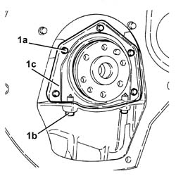
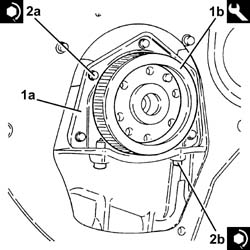
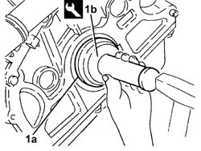
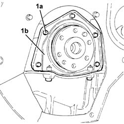

1020D40 FLYWHEEL END OIL SEAL- R+R WITH FLYWHEEL REMOVED
- Path
- Procedures > 10 ENGINE UNIT > 1020 CRANKCASE SUMP AND COVERS > 1020D OIL SEALS ON CRANK SHAFT > 1020D40 FLYWHEEL END OIL SEAL- R+R WITH FLYWHEEL REMOVED
- Kind
- repair procedure (removal / refitting; the operation number is the code)
- Applies to
- engines: 1.8 T.SPARK, 2.0 JTS, 3.2 V6; all production periods
- Interactive page
- https://sloeber94.github.io/elrnDB-aGt/en/#/125000930
Applies to: engines: 2.0 JTS; all production periods
 Removing
Removing
 Refitting
Refitting1. Undo the bolts (1a) and (1b), then remove the flywheel side oil seal cover (1c) with the built in oil seal.

Applies to: engines: 2.0 JTS; all production periods
Refitting
RemovingApply silicone sealant to the matching surfaces between the oil sump and the flywheel side oil seal cover.
1. Place the flywheel side oil cover with the built-in oil seal (1a) back in its housing using the tool (1b).
 | Name | Country |
|---|---|---|
1b | Fitting tool | 1.820.619.000 |
2. Tighten the bolts (2a) and (2b) securing the flywheel side oil seal cover to the recommended torque.
 | Fastening | Component | Ø | Value (daNm) |
|---|---|---|---|---|
2a | Bolt | CRANKSHAFT REAR COVER | M6 | (Engine crankcase side) 0.8 ÷ 1.0 |
| Fastening | Component | Ø | Value (daNm) |
|---|---|---|---|---|
2b | Front and rear bolt | OIL SUMP | M6 | (Flywheel oil seal cover side) 0.8 ÷ 1.0 |

Applies to: engines: 3.2 V6; all production periods
Removing
RefittingRemove the flywheel side oil seal from its housing.
Applies to: engines: 3.2 V6; all production periods
Refitting
Removing1. Place a new flywheel side oil seal (1a) back in its housing using the tool (1b).
| Name | Country |
|---|---|---|
1b | Fitting tool | 1.821.250.000 |

Applies to: engines: 1.8 T.SPARK; all production periods
Removing
Refitting1. Undo the bolts (1a) and remove the flywhell side oil cover (1b) with built in oil seal.

Applies to: engines: 1.8 T.SPARK; all production periods
Refitting
RemovingFit the flywheel side oil cover with the integrated oil seal and tighten the bolts to the recommended torque.
Fastening | Component | Ø | Value (daNm) | |
|---|---|---|---|---|
- | Bolt | CRANKSHAFT REAR COVER | M6 | (Engine crankcase side) 0.8 ÷ 1.0 |